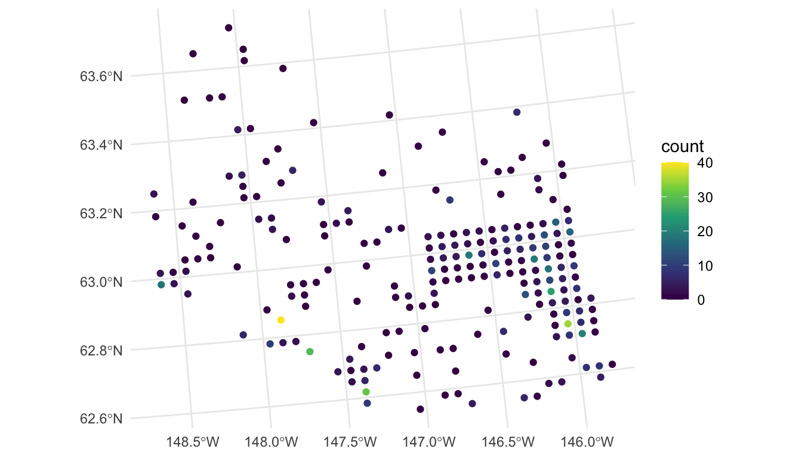
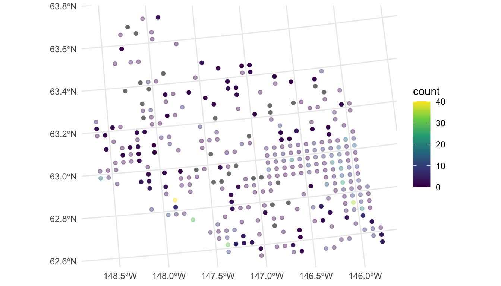

4 Prediction
Throughout this section, we will use the spmodel package and the ggplot2 package:
Goals:
- Predict the response value at an unobserved location for point-referenced data.
- Calculate leave-one-out cross-validation residuals.
4.1 Data Introduction
The moose data in the spmodel package contains observations from a moose survey in Alaska. The Alaska Department of Fish and Game performed the survey on 218 spatial locations throughout the region of interest. Our goal is to predict the moose count in 100 spatial locations in the moose_pred data frame that were not surveyed. Both elev, the elevation of the spatial location, and strat, a stratification variable based on landscape metrics that is either "L" for Low or "M" for medium, are possible predictors for moose count.
moose
#> Simple feature collection with 218 features and 4 fields
#> Geometry type: POINT
#> Dimension: XY
#> Bounding box: xmin: 269085 ymin: 1416151 xmax: 419976.2 ymax: 1541763
#> Projected CRS: NAD83 / Alaska Albers
#> First 10 features:
#> elev strat count presence geometry
#> 1 468.9167 L 0 0 POINT (293542.6 1541016)
#> 2 362.3125 L 0 0 POINT (298313.1 1533972)
#> 3 172.7500 M 0 0 POINT (281896.4 1532516)
#> 4 279.6250 L 0 0 POINT (298651.3 1530264)
#> 5 619.6000 L 0 0 POINT (311325.3 1527705)
#> 6 164.1250 M 0 0 POINT (291421.5 1518398)
#> 7 163.5000 M 0 0 POINT (287298.3 1518035)
#> 8 186.3500 L 0 0 POINT (279050.9 1517324)
#> 9 362.3125 L 0 0 POINT (346145.9 1512479)
#> 10 430.5000 L 0 0 POINT (321354.6 1509966)We visualize the moose counts by running
ggplot(data = moose, aes(colour = count)) +
geom_sf() +
scale_colour_viridis_c(limits = c(0, 40)) +
theme_minimal()
From our plot, we see that there are a large number of observed moose counts at or near 0. Therefore, perhaps a generalized linear model in the Poisson or negative binomial family might be more appropriate for this particular data set. We will come back to this issue in Chapter 7; however, for this section, we assume that a standard spatial linear model is appropriate.
We also see in the plot that the spatial locations in the survey were clearly not randomly selected. Random selection of spatial locations is only required for inference in design-based analyses. For model-based analyses, random selection of spatial locations is not necessarily an assumption (Brus (2021); Dumelle et al. (2022)).
4.2 Moose Count Predictions
In this section, we show how to use predict() and augment() to perform spatial prediction (also called Kriging) for point-referenced data from a model fit with splm(). First, we fit a spatial model to the moose data with a "spherical" spatial covariance and elev, strat, and their interaction as predictors in the model:
moosemod <- splm(count ~ elev * strat, data = moose,
spcov_type = "spherical")
tidy(moosemod)
#> # A tibble: 4 × 5
#> term estimate std.error statistic p.value
#> <chr> <dbl> <dbl> <dbl> <dbl>
#> 1 (Intercept) 0.310 9.02 0.0344 0.973
#> 2 elev 0.0141 0.00806 1.76 0.0792
#> 3 stratM 6.93 2.26 3.07 0.00217
#> 4 elev:stratM -0.0273 0.0130 -2.10 0.0357elev * strat is shorthand for elev + strat + elev:strat.
We then use predict() to predict the moose count at the spatial locations in moose_preds. The predict() function for models fit with splm() works in the same way as it does for models fit with lm(). We provide predict() with the fitted model object, along with a newdata argument that is an sf object, data.frame, or tibble that contains the locations at which to predict. newdata must have the same predictors as those used to fit the spatial model. We see that moose_preds contains the predictors (elev and strat) and the locations at which to predict:
moose_preds
#> Simple feature collection with 100 features and 2 fields
#> Geometry type: POINT
#> Dimension: XY
#> Bounding box: xmin: 269085 ymin: 1416151 xmax: 419976.2 ymax: 1541763
#> Projected CRS: NAD83 / Alaska Albers
#> First 10 features:
#> elev strat geometry
#> 1 143.4000 L POINT (401239.6 1436192)
#> 2 324.4375 L POINT (352640.6 1490695)
#> 3 158.2632 L POINT (360954.9 1491590)
#> 4 221.3125 M POINT (291839.8 1466091)
#> 5 208.6875 M POINT (310991.9 1441630)
#> 6 218.3333 L POINT (304473.8 1512103)
#> 7 126.8125 L POINT (339011.1 1459318)
#> 8 122.0833 L POINT (342827.3 1463452)
#> 9 191.0000 L POINT (284453.8 1502837)
#> 10 105.3125 L POINT (391343.9 1483791)# results omitted
predict(moosemod, newdata = moose_preds)The output of predict() (not rendered in this document) gives predicted moose counts for the 100 unobserved spatial locations in moose_preds.
Examining some of the predictions, we see that a few are negative. These unreasonable negative values are a further indication that we should use a spatial generalized linear model in Chapter 7.
The augment() function can also be used to obtain predictions for unobserved locations. While the required arguments to augment() are the same as the arguments used in predict() (the name of the fitted model object along with a newdata data frame), the output of augment() is an sf object with predictions in the .fitted column. Often, using augment() is more convenient than using predict(), as augment() returns an object with predictions alongside the spatial locations and any predictors used in the model.
moose_aug <- augment(moosemod, newdata = moose_preds)
moose_aug
#> Simple feature collection with 100 features and 3 fields
#> Geometry type: POINT
#> Dimension: XY
#> Bounding box: xmin: 269386.2 ymin: 1418453 xmax: 419976.2 ymax: 1541763
#> Projected CRS: NAD83 / Alaska Albers
#> # A tibble: 100 × 4
#> elev strat .fitted geometry
#> * <dbl> <chr> <dbl> <POINT [m]>
#> 1 143. L 3.45 (401239.6 1436192)
#> 2 324. L 1.59 (352640.6 1490695)
#> 3 158. L -0.267 (360954.9 1491590)
#> 4 221. M 2.39 (291839.8 1466091)
#> 5 209. M 7.62 (310991.9 1441630)
#> 6 218. L -1.02 (304473.8 1512103)
#> # ℹ 94 more rowsWe can construct a plot of the predictions with
ggplot(data = moose, aes(colour = count)) +
geom_sf(alpha = 0.4) +
geom_sf(data = moose_aug, aes(colour = .fitted)) +
scale_colour_viridis_c(limits = c(0, 40)) +
theme_minimal()
In the plot, the observed counts are also shown with faded points. We see that, most of the predictions are at or near 0, but spatial locations that are close in proximity to observed counts that are very large have a higher predicted count (for example, the point in the southwest region that is directly south of the observed count coloured yellow is predicted to be around 10).
4.3 Cross Validation
Leave-one-out cross validation can be performed to compare model fits as an alternative to the model fit metrics discussed in Chapter 3. In leave-one-out cross validation, a single observation is removed from the data, the model is re-fit, and a prediction is made for the held-out observation. Then, a loss metric like mean-squared-prediction error (MSPE) is computed and used to evaluate model fit. The lower the mean-squared-prediction error, the better the model fit.
The loocv() function can be used to perform leave-one-out cross validation on a fitted model object.
loocv(moosemod)
#> [1] 32.15933The output of loocv() is the mean-squared-prediction-error (MSPE).
4.4 R Code Appendix
library(spmodel)
library(ggplot2)
moose
ggplot(data = moose, aes(colour = count)) +
geom_sf() +
scale_colour_viridis_c(limits = c(0, 40)) +
theme_minimal()
moosemod <- splm(count ~ elev * strat, data = moose,
spcov_type = "spherical")
tidy(moosemod)
moose_preds
# results omitted
predict(moosemod, newdata = moose_preds)
moose_aug <- augment(moosemod, newdata = moose_preds)
moose_aug
ggplot(data = moose, aes(colour = count)) +
geom_sf(alpha = 0.4) +
geom_sf(data = moose_aug, aes(colour = .fitted)) +
scale_colour_viridis_c(limits = c(0, 40)) +
theme_minimal()
augment(moosemod, newdata = moose_preds, interval = "prediction",
level = 0.99)
loocv(moosemod)
moose_int <- splm(count ~ 1, data = moose,
spcov_type = "spherical")
loocv(moose_int)
# results omitted
loocv(moosemod, cv_predict = TRUE, se.fit = TRUE)